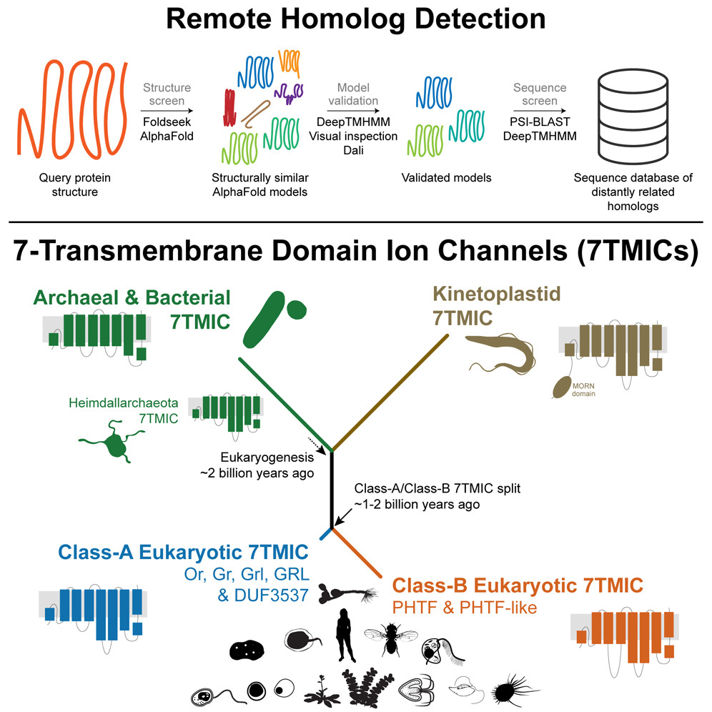
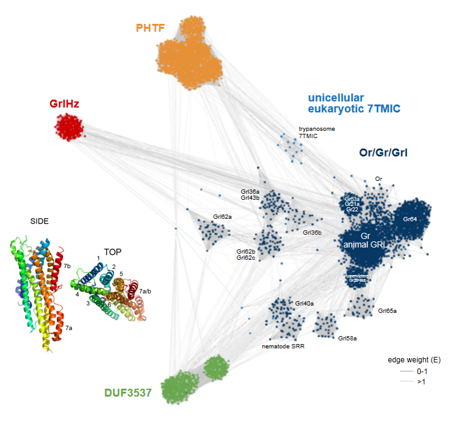
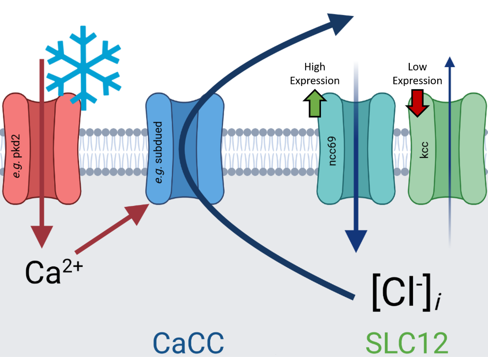
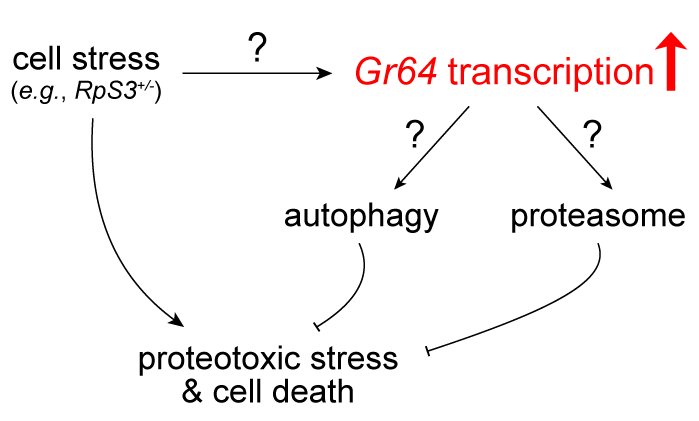
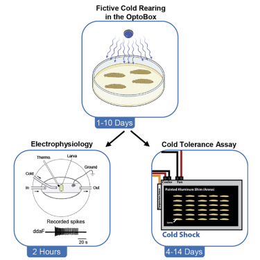
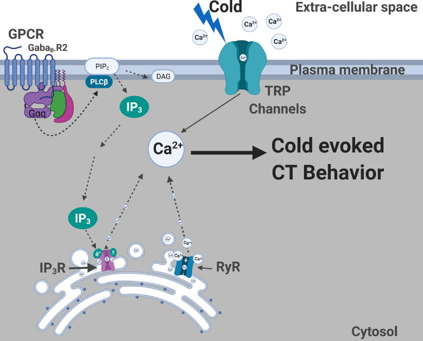
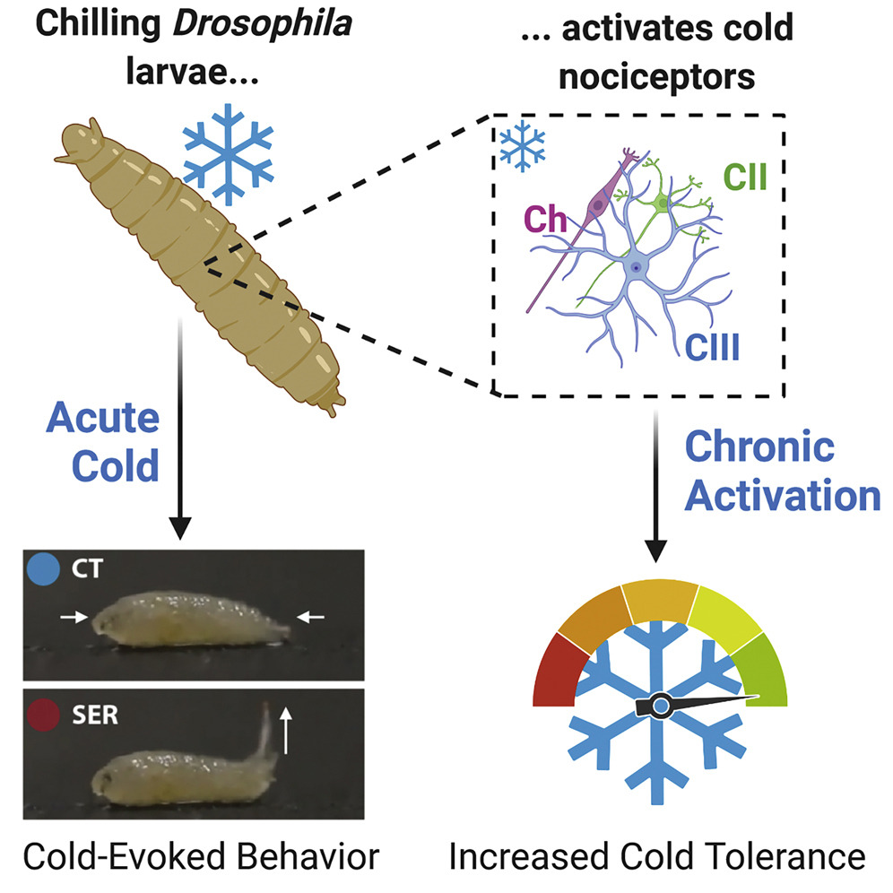
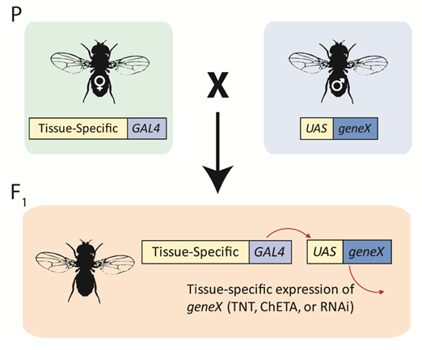
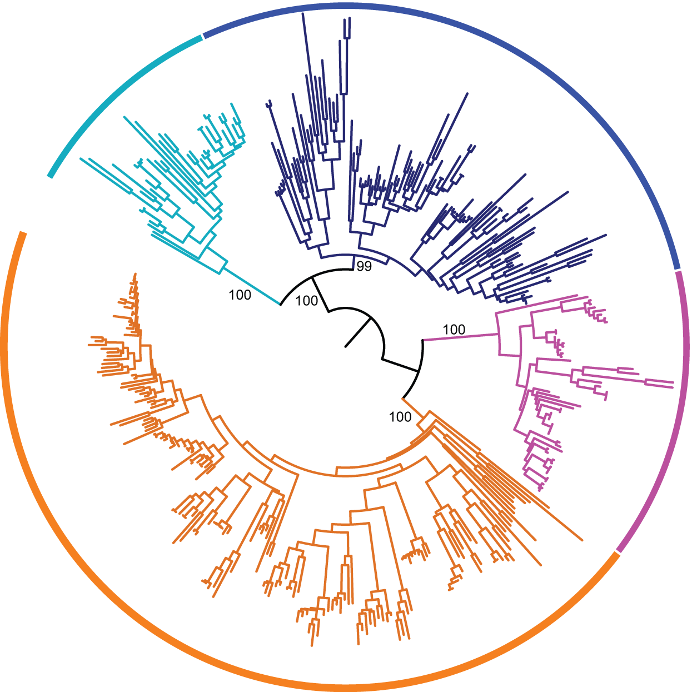
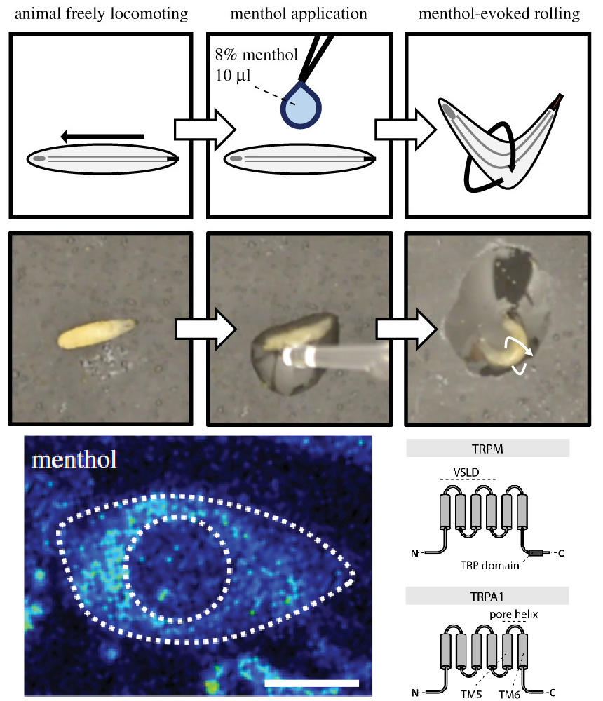

§ - Undergraduate co-author
* - Co-corresponding authors
These authors contributed equally
-
2023
-

Remote homolog detection places insect chemoreceptors in a cryptic protein superfamily spanning the tree of life
Himmel NJ*, Moi D, and Benton R*
Current Biology- Outlines a pipeline for the identification of extremely distantly related protein homologs.
- A search for distant homologs of insect Odorant receptors (ORs) and Gustatory receptors (GRs) unexpectedly identified similar proteins across the tree of life, including in prokaryotes.
- Through a combination of graph-based homology analyses and phylogenetics, we resolved the long-standing mystery of the evolutionary origins of ORs/GRs: they are a single branch of a protein superfamily (7-transmembrane domain ion channels; 7TMICs) which originated ~3-4 billion years ago.
-

Structural screens identify candidate human homologs of insect chemoreceptors and cryptic Drosophila gustatory receptor-like proteins
Benton R* and Himmel NJ*
eLife- Insect Odorant and Gustatory receptors (ORs/GRs) are strikingly similar in tertiary structure to PHTF, a highly conserved family of channels with human homologs.
- The first description of structurally similar proteins in chordates, sponges, trypanosomes (Leishmania & Trypanosoma), and other eukaryotic organisms.
- Screens of the fly proteome identify cryptic GR homologs, deemed Grls. Nine of these are restricted to flies, and may have evolved from ancestral GR lineages. One of these, GrlHz, is conserved across Holozoa.
- The Grls show diverse tissue expression, but some are expressed in presumed chemosensory neurons.
- These results suggest an evolutionary history for ORs/GRs not defined by a simple loss in Chordata, but rather, lineage-specific diversification of a putatively ancient protein fold.
-

Chloride-dependent mechanisms of multimodal sensory discrimination and nociceptive sensitization in Drosophila
Himmel NJ, Sakurai A, Patel AA, Bhattacharjee S, Letcher JM, Benson MN§, Gray TR§, Cymbalyuk GS, and Cox DN
eLife- The anoctamins subdued and white walker are required in multimodal sensory neurons for cold, but not touch, sensing.
- These multimodal neurons unexpectedly make use of excitatory chloride for discriminately encoding cold.
- Genetic overexpression of a Na-K-Cl cotransporter drives a neuropathic-pain-like state in larvae, mimicking the molecular bases of neuropathic pain in humans.
-
2022
-

Sweet sensors support stressed cell survival
Himmel NJ and Benton R
PLoS Biology- Commentary pertaining to Baumgartner & Mastrogiannopoulos et al.
-

Protocols for measuring cold-evoked neural activity and cold tolerance in Drosophila larvae following fictive cold acclimation
Himmel NJ, Sakurai A, Donaldson KJ, and Cox DN
STAR Protocols- Design for the OptoBox, a rig for developmental optogenetic activation of Drosophila
- Protocol for fictive cold acclimation via the OptoBox
- Protocol for electrophysiological recordings from larval cold-sensing neurons
- Protocol for a cold-tolerance assay adapted from a cold-evoked behavior assay
-

Modality specific roles for metabotropic GABAergic signaling and calcium induced calcium release mechanisms in regulating cold nociception
Patel AA, Sakurai A, Himmel NJ, and Cox DN
Frontiers in Molecular Neuroscience- GPCRs, RyR, and IP3R are required for cold larval cold nociception.
- Ectopic application of Ryanodine causes bursting in CIII cold nociceptors.
- The TRP channel Pkd2 genetically interacts with IP3R.
-
2021
-

Identification of a neural basis for cold acclimation in Drosophila larvae
Himmel NJ, Letcher JM, Sakurai A, Gray TR§, Benson MN§, Donaldson KJ, and Cox DN
iScience- The primary cold-evoked behavior among different species of drosophild larvae is the previously described bilateral contraction (CT) response.
- CT appears labile, but its incidence does not correlate with any cold-related climate variables.
- CT is largely transient, and doesn't obviously protect from noxious cold.
- Larvae from the repleta radiation perform a unique behavior deemed the Spiracle Extension Response (SER).
- Drosophila melanogaster Class III neurons are necessary for, and sensitized by, cold acclimation (increase in cold tolerance after developmental exposure).
- Cold acclimation can be initiated by optogenetically activating Class III neurons.
- Click to download supplementary material.
-

Purinergic signaling is enhanced in the absence of UT-A1 and UT-A3
Himmel NJ, Rogers RT, Redd SK, Wang Y§, Blount MA
Physiological Reports- Disabling urea transport (UT-A1/A3 KO) predictably leads to an inability to properly concentrate urine, and decreases in urinary cAMP.
- Urinary ATP and prostaglandin levels are increased in KO animals, evidencing increased activation of ATP receptors.
-
2020
-

Dissecting the molecular and neural circuit bases of behavior as an introduction to discovery-driven research: A report on a Course-Based Undergraduate Research Experience
Himmel NJ, Letcher JM, Cox DN
Journal of Undergraduate Neuroscience Education- Outlines and describes the findings of a course-based undergraduate research experience, which was used to investigate the molecular and cellular basis of cold nociception in D. melanogaster larvae.
-

Phylogenetics identifies two eumetazoan TRPM clades and an 8th family of TRP channel, TRP soromelastatin (TRPS)
Himmel NJ*, Gray TR§, Cox DN*
Molecular Biology and Evolution- A previously unknown family of TRP channel, called TRP soromelastatin (TRPS), is a sister clade to TRP melastatin (TRPM).
- C. elegans ced-11 is an example of a TRPS. Its inclusion in TRPS resolves long standing issues with the phylogenetic arrangement of TRPM.
- The eumetazoan TRPM family is made of 2 sub-families, αTRPM and βTRPM, not the 8 typically considered.
- TRPM1-TRPM8 are specific to vertebrates, and consistute a poor standard for undertanding the broader TRPM family.
- Click to download supplementary material.
- Click to view author correction.
-
2019
-

Drosophila menthol sensitivity and the Precambrian origins of TRP-dependent chemosensation
Himmel NJ*, Letcher JM, Sakurai A, Gray TM§, Benson MN§, Cox DN*
Philosophical Transactions of the Royal Society B- While menthol elicits cooling sensations in humans, Drosophila larvae sense menthol via high temperature/mechanical nociceptors.
- Menthol-evoked behavior is TrpA1- and Trpm-dependent, suggesting a conserved role for these sensors in menthol sensing.
- Phylogenetic analyses reveal that bilaterian TRPMs are descended from at least 3 ancestral genes.
- Ancestral sequence reconstructions suggest that some residues critical to TRP-menthol sensing are conserved from the last common ancestor of protostomes (e.g., Drosophila) and deuterostomes (e.g., humans), which existed >550 million years ago.
-

An assay for chemical nociception in Drosophila larvae
Lopez-Bellido R, Himmel NJ, Gutstein HB, Cox DN, Galko MJ
Philosophical Transactions of the Royal Society B- Constitutes the first description of acid nociception in Drosophila melanogaster larvae, and outlines a method for investigating other chemical stimuli.
- Acid application causes nocifensive rolling, which is sensitized by puncturing, but not by UV irradiation or pinching.
- Acid nociception operates via the previously described Class IV nociceptor circuit.
-
2018
-

Chronic lithium treatment induces novel patterns of pendrin localization and expression
Himmel NJ, Wang Y§, Rodriguez DA§, Sun MA§, Blount MA
American Journal of Physiology - Renal Physiology- Outlines previously undescribed side-effect of lithium treatment.
- Long-term lithium treatment leads to misexpression of the ion exchanger Pendrin in renal epithelial cells.
- Describes a novel renal cell, evidencing that renal epithelial cells may retain plasticity into adulthood, and that this plasticity may lead or contribute to lithium-induced disease.
-
2017
-
2016
-

The TRP Channels Pkd2, NompC, and Trpm Act in Cold-Sensing Neurons to Mediate Unique Aversive Behaviors to Noxious Cold in Drosophila
Turner HN, Armengol K, Patel AA, Himmel NJ, Sullivan L, Iyer SC, Bhattacharya S, Iyer EPR, Landry C, Galko MJ*, Cox DN*
Current Biology- Characterizes a newly discovered behavior in Drosophila melanogaster larvae: cold-evoked contraction.
- Establishes that Class III md neurons are cold nociceptors, making them the second class of Drosophila larval nociceptor identified.
- Class III neurons function in both cold nociception and mechanosensation, driving different behaviors in an activation dose-dependent fashion.
- Larval cold nociception requires transient receptor potential (TRP) channels, indicating that TRP-dependent thermal sensing may be an ancient, conserved trait.
-
2014
-

Absence of PKC-Alpha attenuates Lithium-Induced Nephrogenic Diabetes Insipidus
Sim JH, Himmel NJ, Redd SK, Pulous FE, Rogers RT, Black LN, Hong SM, von Bergen TN, Blount MA
PLOS One- Identifies the PKC signaling pathway as a potential target for treating lithium-induced disease.
- PKC-alpha KO protects AQP2 and UT-A1 protein expression and localization during lithium treatment.
- PKC-alpha KO prevents the development of lithium-induced polyuria.